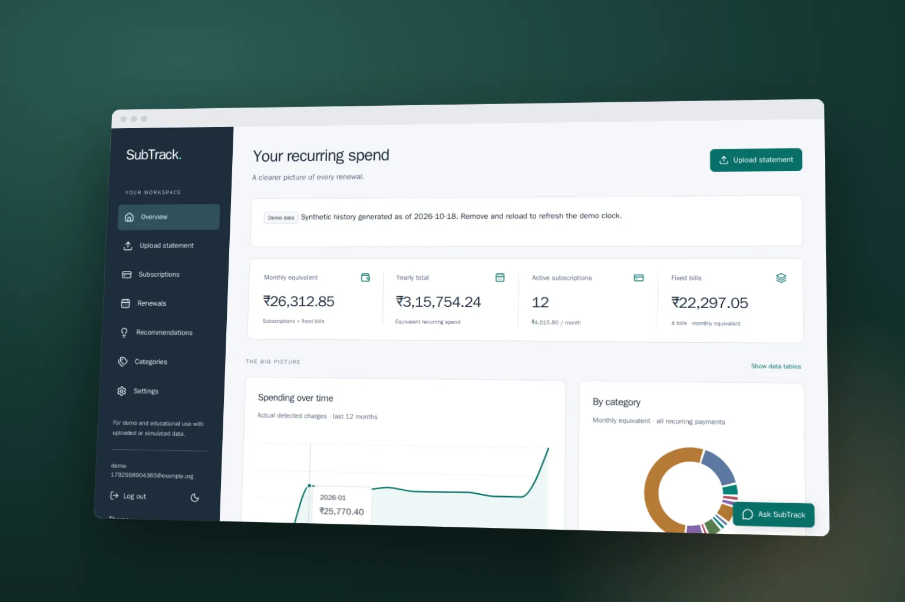

Recurring spend you can verify to the rupee.
Turning raw INR bank statements into a clear picture of subscriptions, fixed bills, and renewals, with an assistant that cannot quote a number it cannot trace.

- Project
- Personal finance · AI-assisted full-stack
- Engineering focus
- Recurrence detection, verified AI answers, and exact money handling
- Technology
- React · TypeScript · Vite · FastAPI · PostgreSQL · Gemini
The problem
Subscriptions and fixed bills are scattered across months of bank transactions, with different merchant names, irregular dates, and quiet price increases. People rarely know their real monthly recurring spend or what renews next. Adding an AI assistant makes this easier to explore, but a language model that invents or miscalculates a rupee amount is worse than no assistant at all.
The approach
SubTrack keeps every number in deterministic code. Statements arrive as CSV, PDF, or images, are extracted locally, and must be reviewed by the user before import. A detector finds weekly, monthly, quarterly, and yearly cadences, and Decimal calculations drive the dashboard, renewals, budgets, and advisory savings. The assistant reads scoped data through read-only tools, and a server-side verifier blocks any figure it cannot trace back to those tool results.
- Import a statement
- Review extracted rows
- Detect recurring charges
- Calculate renewals and savings
- Ask a verified question
Key decisions
Let the model talk, never calculate
The assistant can call seven read-only tools inside a read-only transaction. Its answer is buffered and every amount, date, count, and percentage is checked against the tool results before anything reaches the browser; unverifiable answers fall back to a marked deterministic response.
The tradeoff. The verifier proves where a figure came from, not that the surrounding prose is correct, and strict checking can reject some useful phrasing.
Treat money as exact and detection as evidence
Amounts stay Decimal in Python and decimal strings over the API. Recurrence requires a minimum number of charges, at least 70% of intervals within tolerance, and low amount variation, and each detection carries a confidence score. User confirmations and cancellations survive re-detection.
The tradeoff. Conservative rules miss irregular or very new subscriptions until enough history exists.
Make live AI opt-in and bounded
An offline, deterministic policy is the default. Gemini is used only with per-user consent and is wrapped in a global kill switch, daily request and token caps, and a reservation before every provider call, all coordinated through PostgreSQL.
The tradeoff. The offline assistant is less conversational, and the extra controls add operational configuration.
Where it stands
SubTrack reached a demo-complete 1.0.0 release with accounts, statement import, detection, renewals, recommendations, alerts, and the verified assistant. It is backed by 477 backend tests on real PostgreSQL, 73 frontend tests, and Playwright flows in Chromium, Firefox, and WebKit, and a free isolated demo is hosted on Vercel and Render.
Current scope
1.0.0 means demo-complete, not production-ready. The hosted demo is synthetic-only with uploads disabled. Detection accuracy is measured on synthetic and handwritten fixtures, not real bank statements, and recommendations are advisory, not financial advice.
Before a real-user beta, the remaining work is multi-instance, backup-restore, load, and security drills, plus a backed-up database, real email delivery, and approved legal documents.
Explore the build
- Project overview, features, and status

- Detection, verifier, and architecture
- Statement import formats and limits
- Definition of Done and known gaps
Repository sources reviewed on 22 October 2026. The tradeoffs above reflect an analysis of the implementation and documentation.